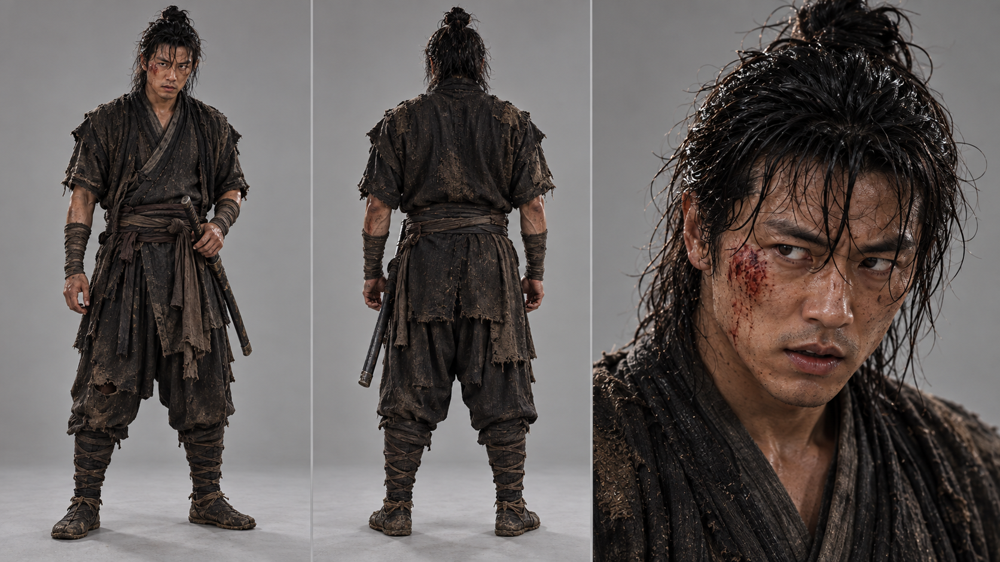
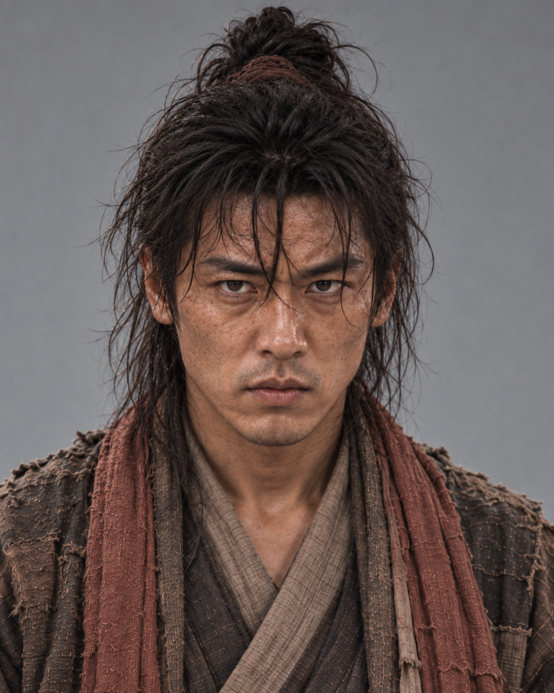
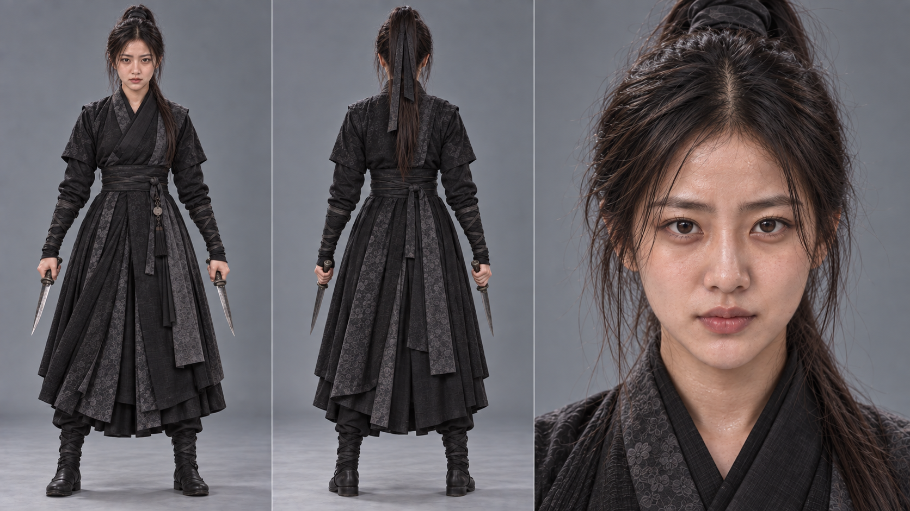
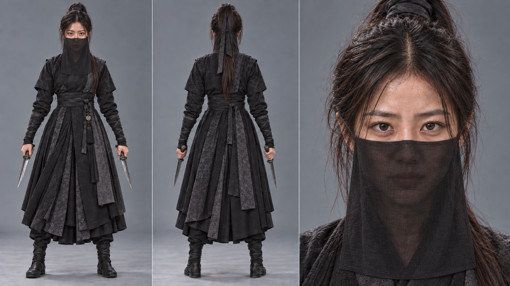
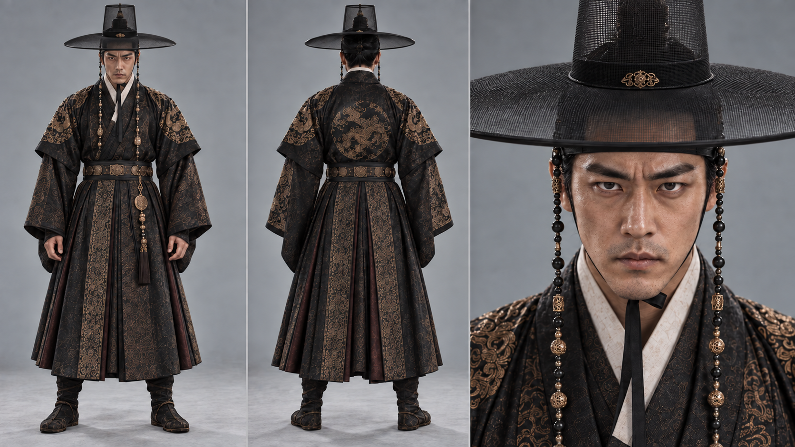
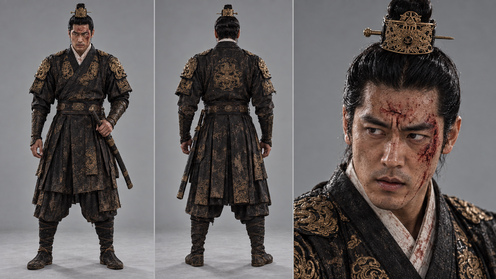

갑패 주요인물 캐릭터시트 재작업
실사 배우의 얼굴 감각을 더 정확히 고정하다
2026년 9월 29일실사감 보강을 위한 주요인물 재정비
앞서 완성한 캐릭터 시트는 트레일러의 인물 설계에 충분한 기준이 되었지만, 실제 영상 생성 단계로 갈수록 한 가지 문제가 더 분명해졌다. 인물의 구조와 의상은 잘 잡혀 있었지만, 실제 배우처럼 느껴지는 얼굴의 정체성과 피부의 현실감을 더 밀어붙일 필요가 있었다는 점이다.
그래서 9월 29일에는 필복, 여생, 이현 세 주연 인물을 다시 다듬었다. 이번 작업은 새 얼굴을 찾는 것이 아니라, 기존 이미지에서 인물의 얼굴 정체성을 먼저 고정한 뒤 그 위에 신분·상황·의상·장비를 다시 설계하는 방식으로 진행했다.
핵심은 인공지능 특유의 지나치게 매끈한 느낌을 줄이는 것이었다. 모공, 잔주름, 주근깨, 수염 자국, 잔상처, 자연스러운 좌우 비대칭 같은 요소를 세밀하게 보강해 실제 배우의 피부와 얼굴에 가까운 질감을 만들었다. 또한 회색 스튜디오 배경, 부드러운 측면광, 정면·후면·얼굴 클로즈업의 3단 구성을 통일해 영화 의상 테스트 사진처럼 보이도록 맞췄다.
이번 재작업의 핵심은 ‘더 멋진 이미지’가 아니라, 같은 사람이 다른 의상과 상황 속에서도 계속 같은 배우처럼 보이도록 만드는 일이었다.
필복 — 백정의 거칠음과 주인공의 존재감을 함께
필복은 거칠게 살아온 백정이라는 배경과, 이야기의 중심에 서는 주인공다운 존재감을 동시에 살리는 데 중점을 두었다. 동일한 얼굴을 유지하면서 햇볕에 그을린 피부, 모공, 주근깨, 수염 자국과 상처를 더해 생활감을 높였고, 체형은 키가 크고 팔다리가 긴 노동형 몸으로 조정했다. 평상복과 전투복에서도 낡은 옷감과 붉은 천, 흐트러진 상투가 일관되게 이어지도록 했다.



이번 필복 작업에서 가장 중요했던 것은 ‘거친 생활감’이 단순한 분장처럼 보이지 않게 하는 것이었다. 피부의 흔적이 과장된 효과가 아니라 실제로 햇볕과 노동을 견뎌온 얼굴처럼 읽혀야 했다. 동시에 주연으로서 시선이 모이는 얼굴이어야 했기 때문에, 지친 피부와 강한 존재감이 같이 서도록 균형을 맞췄다.
여생 — 하나의 얼굴로 여러 신분을 설득하다
여생은 이번 재작업에서 가장 섬세한 인물이었다. 몰락한 규수이자 평민으로 숨어 지내는 모습, 화려한 기녀 ‘단휘’, 냉정한 암살자까지 하나의 얼굴로 여러 신분을 설득력 있게 표현해야 했기 때문이다. 얼굴의 정체성은 유지하되 표정·화장·머리·의상을 달리했다.
특히 따뜻한 미소, 속내를 감춘 반미소, 감정이 억제된 살수의 눈빛처럼 상황마다 미세한 표정 차이를 만드는 데 집중했다. 여생은 설정상 변화폭이 큰 인물이지만, 그 변화가 ‘다른 사람’처럼 보이면 안 되기 때문이다.




이 재작업으로 여생은 ‘한 명의 배우가 여러 얼굴을 연기하는 인물’로 더 분명해졌다. 미세한 표정 변화와 피부 디테일이 더해지면서, 같은 얼굴이 상황에 따라 완전히 다른 긴장감을 가지도록 만드는 것이 가능해졌다.
이현 — 왕자다운 세련됨과 차갑고 야심 찬 성격
이현은 왕자다운 세련됨과 차갑고 야심 찬 성격을 함께 드러내는 데 중점을 두었다. 전투형·갓을 쓴 평상복·사냥복 모두 같은 배우로 보이도록 얼굴과 체형을 고정하고, 창백하지만 모공과 수염 자국이 보이는 실제 남성 피부를 구현했다.
검은 금문 의상, 갓과 구슬 장식, 상투관, 활과 화살통 등의 왕실 소품도 실제 재질과 무게감이 느껴지도록 다듬었다. 왕실 인물인 만큼 지나친 미화보다 절제된 귀함과 냉기가 느껴지도록 정리했다.



이현의 경우 가장 중요한 것은 ‘깔끔하다’와 ‘차갑다’가 동시에 보여야 한다는 점이었다. 왕실 인물의 정제된 인상은 유지하되, 피부와 표정에서는 실제 인간의 결이 보여야 했다. 그래서 과도하게 미끈한 AI 미남상이 아니라, 가까이서 보면 숨결과 피로가 느껴지는 배우형 얼굴로 밀어붙였다.
같은 사람처럼 보이게 만드는 기준값
이번 재작업을 통해 세 인물 모두 이전보다 훨씬 안정된 얼굴 정체성을 갖게 되었다. 캐릭터별 상황과 의상이 달라져도 같은 사람으로 읽히고, 영상 생성 단계에서 다른 장면을 만들어도 얼굴이 쉽게 흔들리지 않도록 기준값을 단단히 잡은 셈이다.
이제 《갑패》 트레일러의 주연 인물들은 캐릭터 설정 차원을 넘어, 실제로 카메라 앞에 설 배우처럼 다룰 수 있는 상태에 가까워졌다. 사람의 일관성이 더 단단해질수록, 이후 장소와 카메라, 액션도 더 안정적으로 통제할 수 있다.